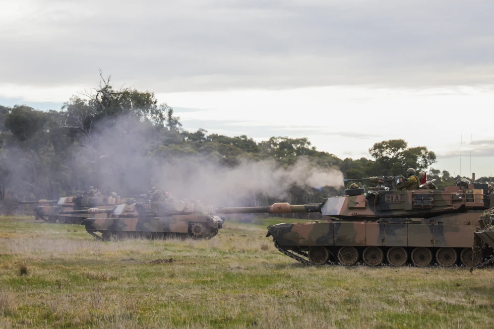

Tank News
Australia gives 49 aging Abrams tanks to Ukraine

In this photo released by Australian Department of Defence, an Australian Army trooper fires the .50 cal
heavy machine gun from an Australian Army M1A1 Abrams Main Battle Tank during Exercise Gauntlet Strike at
the Puckapunyal Military Area in Victoria, Australia, on June 26, 2024. (CPL Johnny Huang/Australian Department
of Defence via AP)
MELBOURNE, Australia (AP) — Australia will give 49 of its aging M1A1 Abrams tanks to Ukraine months after Kyiv
requested the redundant fleet, Defense Minister Richard Marles said Thursday.
The Australian government was giving Ukraine most of its American-made M1A1 tanks, which are valued at
245 million Australian dollars ($163 million), Marles said. They will be replaced in Australia by a fleet
of 75 next-generation M1A2 tanks.
In February, Marles said that giving Ukraine the tanks as they were phased out was not on his government’s agenda.
But on Thursday he said he did not regard the donation as a backflip on his government’s previous position.
“We talk with the Ukrainian government consistently around how best we can support them,” Marles told Australian
Broadcasting Corp.
“We look at the material that we have; its effectiveness, ... the shape that it’s in, to be frank, whether it would
be able to make a difference, whether it can be sustained and maintained so that it can be kept in the fight. And the
Abrams tanks fit all of those criteria,” he added.
The United States provided the necessary permission for Australia to transfer the tanks to Ukraine as required
under U.S. International Traffic in Arms Regulations, Defense Industry and Capability Delivery Minister Pat Conroy said.
“We are working very closely with our U.S. allies on the donation of these tanks,” Conroy said.
The United States agreed to send 31 Abrams tanks to Ukraine in January 2023 after an aggressive monthslong campaign by
Kyiv arguing that the tanks were vital to its ability to breach Russian lines.
Conroy said Australia placed no specific conditions on how Ukraine used the tanks or on whether they crossed the Russian border.
“Our long-standing principle is as long as they are used according to the international rules of law, there are no other conditions,”
Conroy said.